隐私运营 Agent · 产品调研
RAG 知识库界面参考图册
收集日期：2026-11-03。覆盖 6 款代表性产品，不是市场全部产品。图片来自官方文档或官方 GitHub 图片仓库，保留原始标注；没有现场登录实测，没有重绘或生成产品界面。点击图片可放大，点击原图可查看原始尺寸。
Dify · 文档管理与片段维护
把资料列表与片段详情分开；启停和归档是维护入口，不能据此认定有自动质量评分。
官方文档截图，未标注精确应用版本。
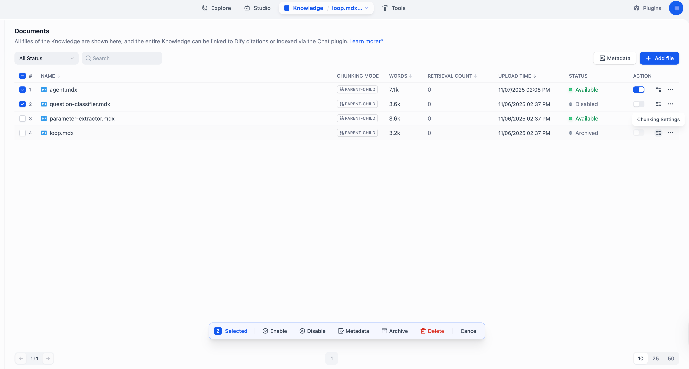
文档列表与批量操作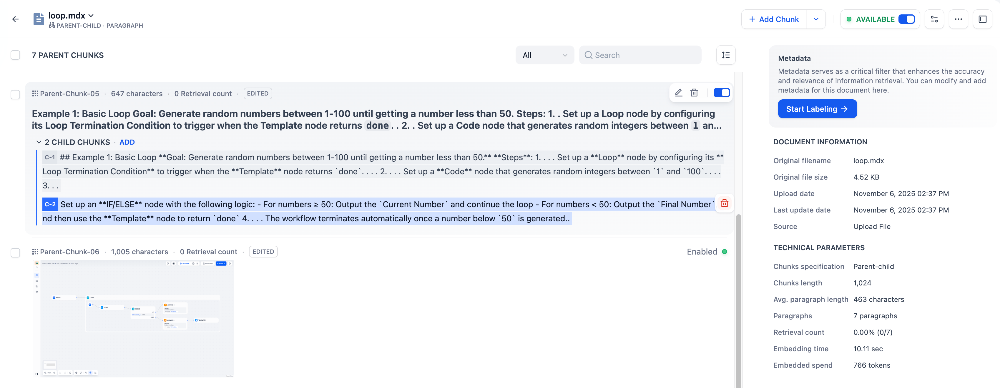
片段内容与文档信息RAGFlow · 解析结果对照与修订
最值得参考的是原文和解析片段并排显示；用户能发现表格错位、缺内容，并修订片段。
官方文档 DEV 页面引用截图，图片可能来自较早版本。
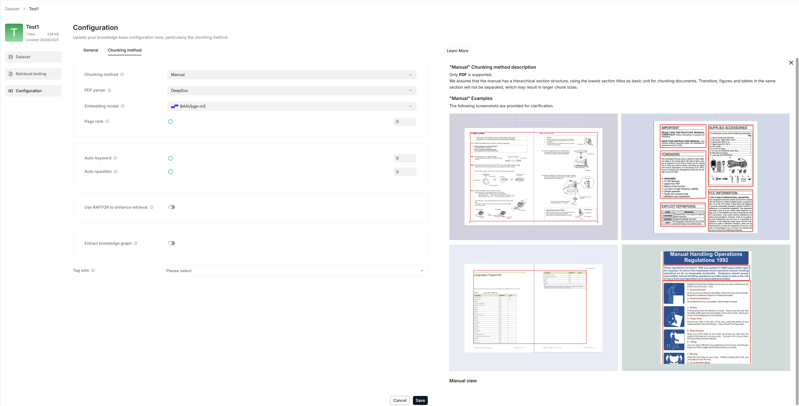
解析策略配置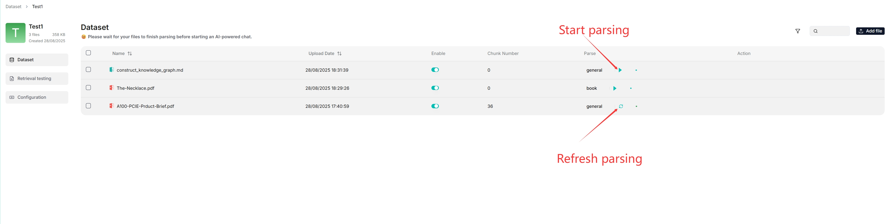
文件解析状态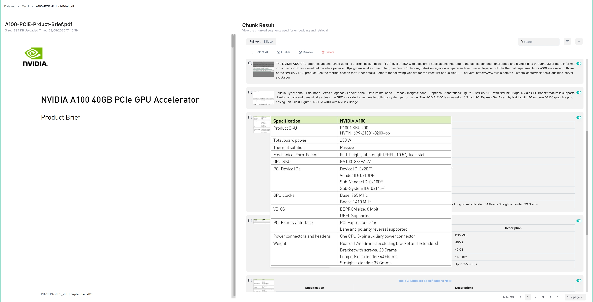
原文与解析片段对照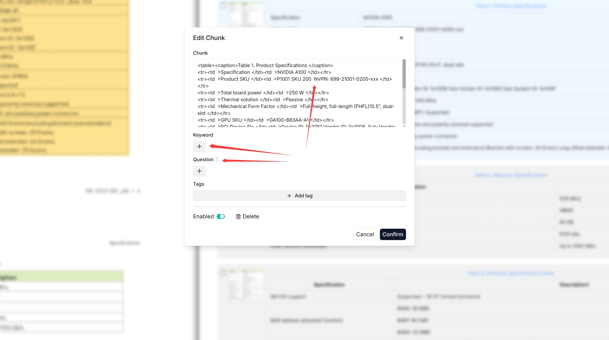
修订片段、关键词与问题FastGPT · 导入前预览
上传→配置→预览→就绪，把检查分块内容纳入导入过程。预览不是系统自动证明资料正确。
官方快速上手教程截图，未标注精确应用版本。
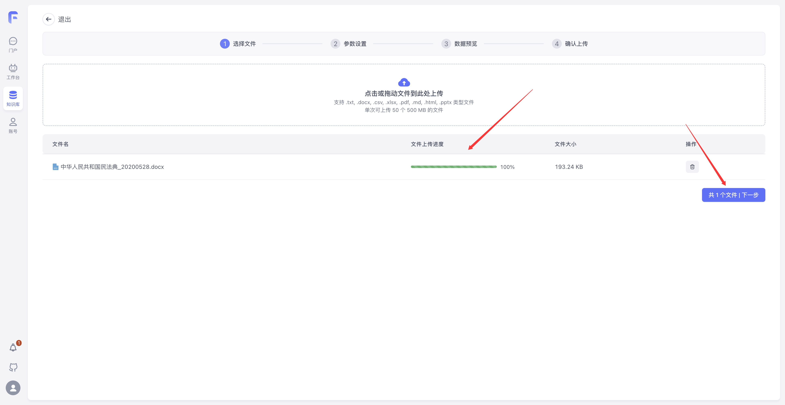
上传文件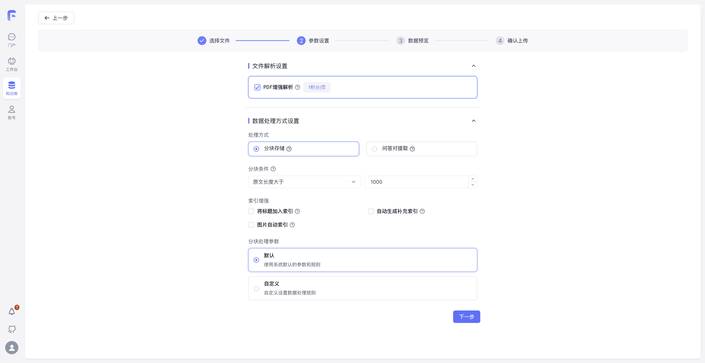
解析与分块参数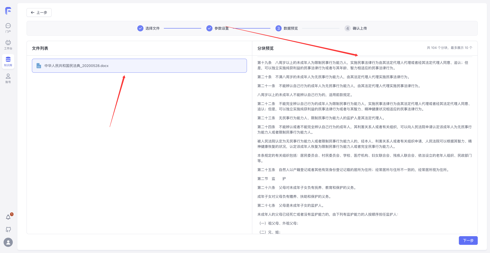
入库前预览分块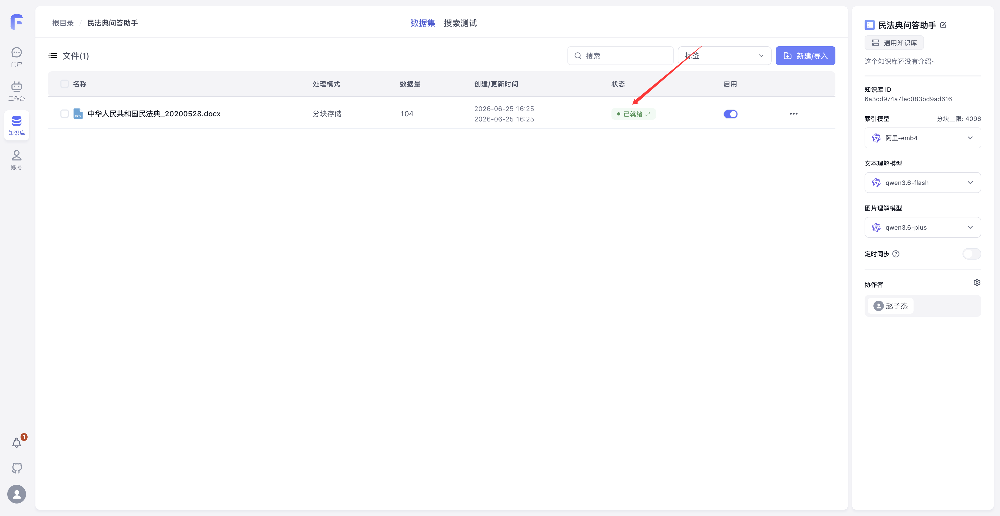
资料处理完成与就绪状态MaxKB · 分类维护、命中测试与入库工作流
适合参考客户知识管理员的操作方式：标签维护、分段修订、试问，以及入库执行详情。
官方 MaxKB-docs v2 分支截图；具体版本和商业功能以官方授权说明为准。
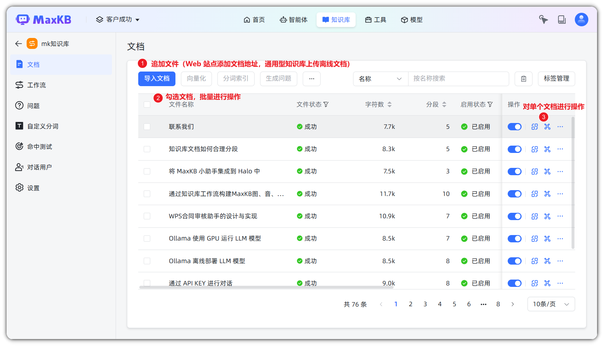
文档列表与维护操作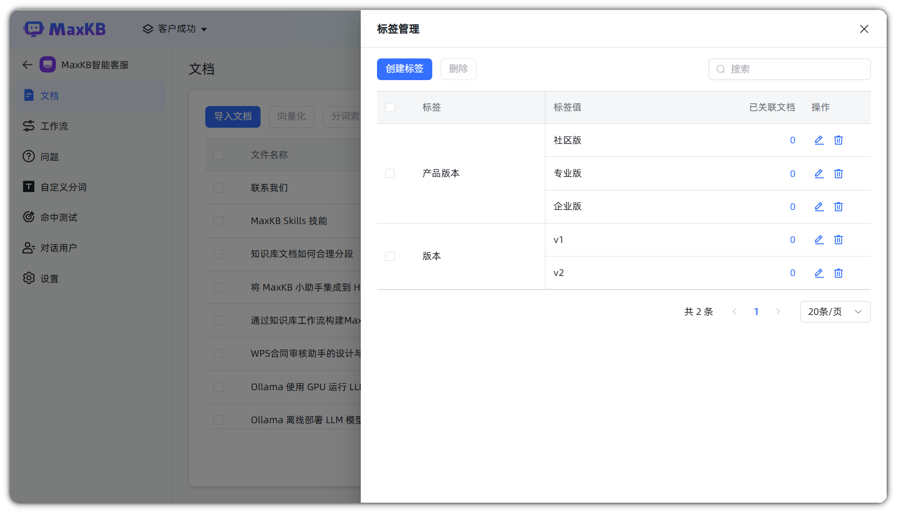
标签管理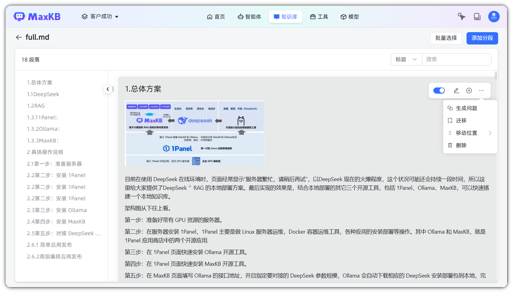
分段管理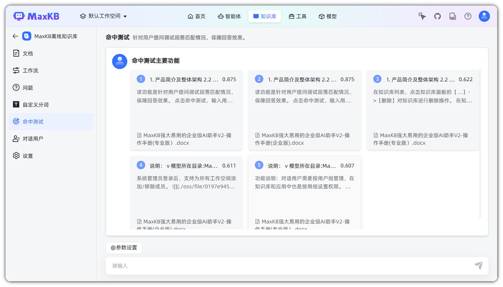
问题命中测试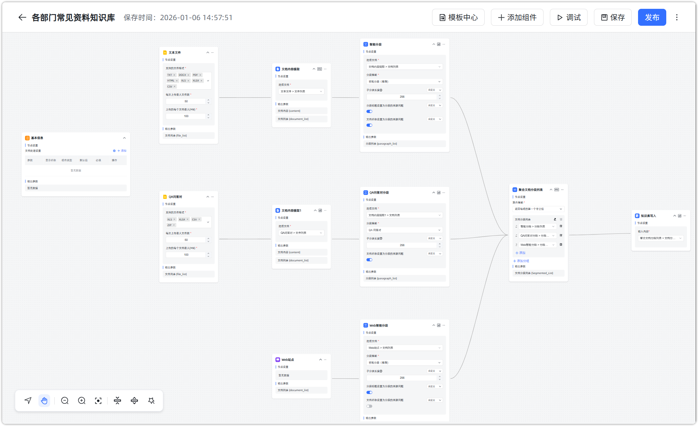
知识入库工作流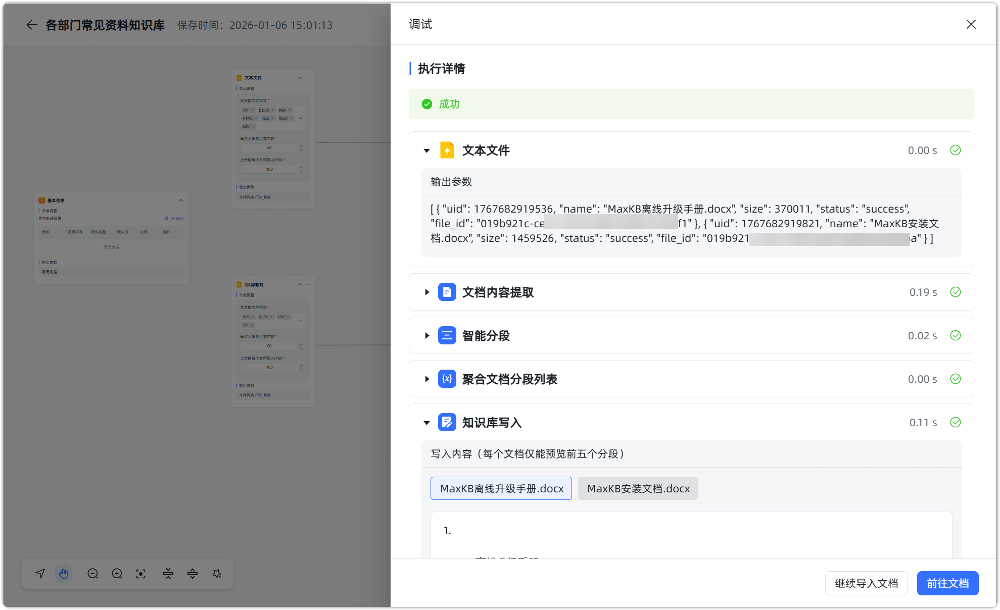
入库流程执行详情百度千帆 · 检索范围与命中测试
测试问题、检索配置、结果和历史记录在一个页面内；能定位检索问题，但相似度不是内容正确率。
官方命中测试教程截图，未登录控制台实测。
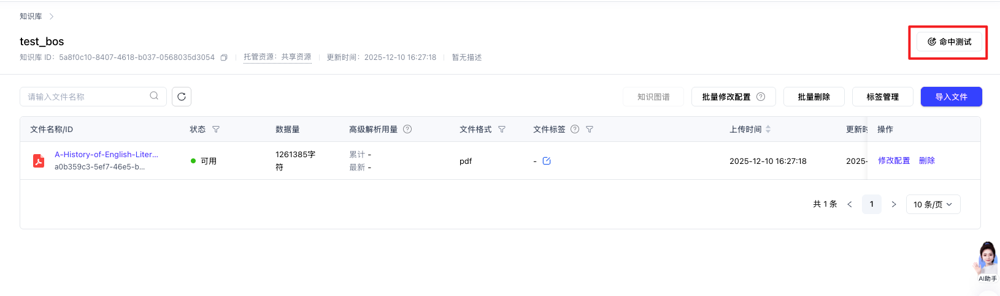
从知识库进入命中测试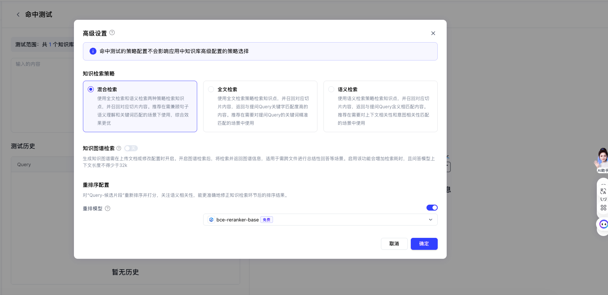
检索模式与重排配置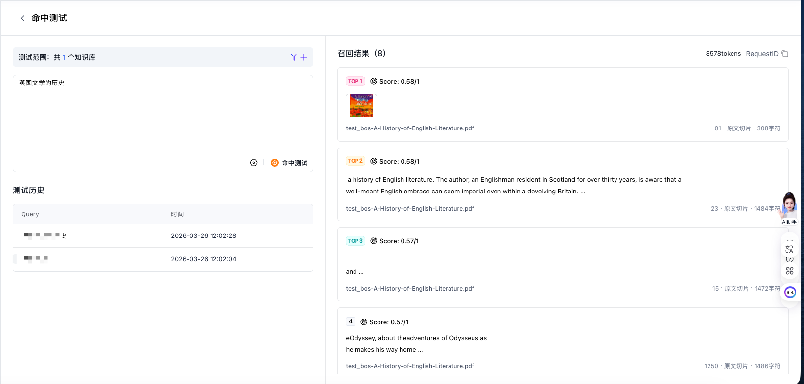
命中结果与测试历史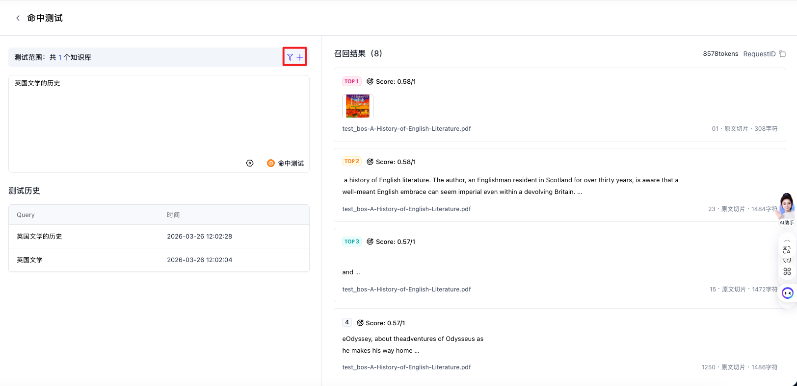
检索范围筛选入口阿里云百炼 · 类目、标签与切片维护（文档核实）
官方文档明确描述类目、标签、元数据和切片启停等页面操作。下图仅作问答显示参考，不能当作质量管理页面。
仅取得官方问答示例界面；没有取得可确认的知识管理页面截图。
你的产品可直接借鉴的设计
| 页面 | 保留功能 | 业务补充 |
|---|
| 知识资料 | 导入、状态、标签、启停、批量操作 | 规范 / 系统说明 / 已核验案例 / 原始证据；适用业务与有效版本 |
| 资料详情 | 原文对照、分块预览、修订、重新解析 | 缺表头、缺单位、来源待确认等具体问题；保留修订记录 |
| 知识验证 | 输入问题、查看命中片段与来源、测试历史 | 标记依据错误、版本过时、缺少条件；形成待处理任务 |
实施边界：不把检索分数当可信度；不把解析成功当业务正确；不把替换原文件当索引已更新。MaxKB v2 文档明确提醒“替换原文档”不改变已有分段与向量，百炼也区分片段修改和源文件修改。
MaxKB 文档维护说明 · 百炼文档管理说明 · 百炼优化说明
截图版权归各产品及文档作者所有，收集用于内部产品设计研究。main 分支与在线文档可能更新，manifest.json 留存此次来源地址。